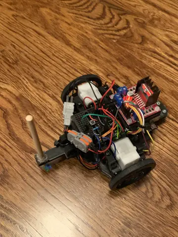
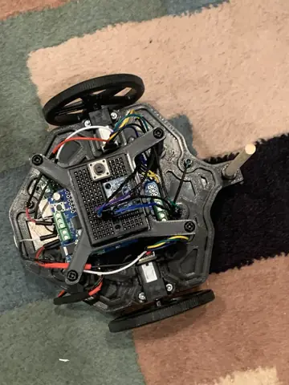

Robot Tour
Builds / Science Olympiad / 2025–26| MCU | RP2040 Zero (2× Cortex-M0+, 133 MHz) |
| Firmware | C++, Pico SDK |
| Drive | 2× NEMA 17 pancake stepper |
| Drivers | 2× TMC2209, STEP/DIR via PIO |
| Encoders | 2× MT6701 magnetic angle |
| IMU | BNO085 |
| Sensor bus | I²C |
| Power | 8× AA NiMH, buck to 3.3 V |
| CAD | Onshape |
Challenge
The robot drives itself through a grid course: it passes through gate zones, pushes water bottles, and stops on a target point. It is scored on how close it stops to that point and how close its run time is to a target time. The hard part is the floor. My 2024 and 2025 robots stopped within about 5 mm at home but missed by 4–6 cm at competition. On dusty, uneven gym floors the wheels slip, and a robot that only counts wheel rotations can't tell.
Won the 2025–26 state championship with 0 cm distance error.
System
Solid arrows from the RP2040 are PIO-generated STEP/DIR. Each MT6701 reads a diametric magnet on its motor shaft, so the wheel angle is measured directly instead of assumed from commanded steps.
Firmware
| Sensor core | Polls both MT6701 encoders and the BNO085 over I²C and fuses wheel odometry with IMU heading into a pose estimate. |
| Motion core | Plans the trajectory and computes wheel velocity targets from the current pose estimate. |
| PIO | Generates STEP/DIR pulse trains for both TMC2209s in hardware. Step timing is unaffected by I²C transactions or interrupts on either core. |
Splitting sensing and planning across the two cores keeps slow I²C reads out of the planning loop. Moving step generation onto PIO removes it from both.
Motion
The robot runs one continuous slalom path through the course instead of a queue of drive/stop/pivot moves. Wheel velocity stays nonzero between start and finish, so there are no stop points where timing error builds up or where the floor can disturb a pivot. A body velocity (v, ω) maps to wheel speeds by differential-drive inverse kinematics, with wheelbase L. Pose is integrated every control tick:
xk+1 = xk + vk·cos θk·Δt yk+1 = yk + vk·sin θk·Δt θk+1 = θk + ωk·Δt
Proposed vs. shipped
Changes since the pre-season build proposal (PDF, 7 MB):
| Part | Proposed (Oct 2025) | Shipped |
|---|---|---|
| MCU | Adafruit KB2040 | RP2040 Zero |
| Stepper driver | TMC2208 | TMC2209 |
| Encoder | AS5600 (fixed I²C address, needs two buses) | MT6701 |
| IMU | MPU9250/6500 | BNO085 |
Previous versions

- Arduino Uno (ATmega328P)
- Pololu Romi gearmotors + hall encoders
- L298N H-bridge
- Stop-and-pivot command queue

- Arduino Uno (ATmega328P)
- N20 gearmotors + hall encoders
- TB6612 I²C motor shield
- MPU6050 tried, dropped for gyro drift